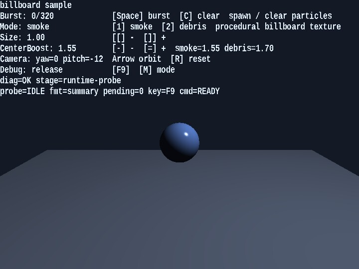

billboard
English | 日本語

Overview
- This sample uses the
Billboardclass to render particle expressions that always face the camera - It uses procedural textures generated by
Texture.buildProceduralBillboardTexture, letting you switch between smoke and debris and compare the two looks - Small spheres and a floor are placed in the background, and a world light together with ground shadow billboards makes the depth relationship of the particles easier to read
How to Run
- Open ./billboard.html
- Use a browser with WebGPU support, and check the help panel and HUD together with the sample when needed
webg Features Used
Billboard: instance-based billboard renderingBillboardShader: particle shader with position, scale, and colorTexture: procedural texture generation by combining a circular mask and noiseSpace / Node / Shape / SmoothShader: renders the background 3D sceneBillboard.drawGround: draws shadow billboards laid down on the ground
Checkpoints
- Confirm that the particles keep facing the front of the camera as it rotates, verifying that the billboard orientation logic is correct
- When switching between smoke and debris with
1 / 2, confirm that the appearance changes significantly even though the particle update formula stays the same, simply because the texture character changes - When changing
centerBoostwith- / =, confirm how the density at the center and the appearance of the edges change - Confirm that this configuration can serve as a practical effect foundation because it keeps the vertex count lower than a mesh-based method with the same number of particles
- Confirm that the spheres receive highlights and that the lighting direction still looks natural when the camera rotates
- Confirm that a faint shadow billboard appears directly below each particle and that the shadow intensity changes with height
Controls
Space: create a particle burst1: switch to the smoke texture2: switch to the debris texture[ / ]: decrease or increase particle size- / =: decrease or increase thecenterBoostof the current modeArrowLeft / ArrowRight: rotate the camera horizontallyArrowUp / ArrowDown: rotate the camera verticallyR: reset the camera anglesC: clear all particles- On smartphones (
coarse pointer), touch buttons← / → / ↑ / ↓ / BURST / 1 / 2 / C / [ / ] / - / +are shown at the bottom of the screen